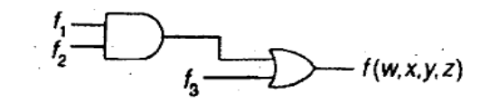

B.Tech. III Semester
Examination, November 2022
Grading System (GS)
Max Marks:
70 | Time: 3 Hours
Note:
i) Attempt any five questions.
ii) All questions carry equal marks.
a) Given the following Boolean function: $F(W,X,Y,Z) = WX'(Y'+Z') + X'.Z'.(W' \oplus Y)$ where $\oplus$ represents the XNOR operation, determine the simplified (minimal) SOP expression for F using boolean algebra and Implement the given function using NOR-NOR logic. (Unit 1)
b) Compute the prime implicants (PI) and essential prime implicants (EPI) in the following Boolean function:
$F(W,X,Y,Z) = \prod M(1,3,5,7,8,9,11,12) + d(2,10)$
Compute a minimal SOP expression for F and determine whether it is unique. (Unit 1)
a) Each of the following functions actually represents a set of four functions, corresponding to the possible assignments of the don't-care terms.
$f_1(w,x,y,z) = \Sigma(1,3,5,6,9,10) + \sum_{\phi}(11,12)$
$f_2(w,x,y,z) = \Sigma(0,3,4,5,8,9) + \sum_{\phi}(6,7)$
i) Find $f_3 = f_1 \cdot f_2$ How many functions does $f_3$ represent?
ii) Find $f_4 = f_1 + f_2$ How many functions does $f_4$ represent? (Unit 1)
b) Given the network of Fig., determine the functions $f_2$ and $f_3$ if $f_1 = xz + x'z'$ and the overall transmission function is to be $f(w,x,y,z) = \sum(0,3,6,10,11,12)$. (Unit 1)

a) Design a $8 \times 1$ multiplexer using one $4 \times 1$ multiplexer and four $2 \times 1$ multiplexers. (Unit 2)
b) Design a combinational logic circuit to convert the BCD to excess-3 code. (Unit 2)
a) Design a $3 \times 8$ decoder using one $1 \times 2$ decoder and two $2 \times 4$ decoder with Enable input. (Unit 2)
b) Draw a schematic for a minimal circuit that uses only NOR gates that performs the two's complement operation on a four bit input value. Let the input be $A_{3:0}$ and the output be $B_{3:0}$. (Unit 2)
a) Convert Decimal to Binary: (Unit 1)
i) $(1024)_{10}$
ii) $(23.25)_{10}$
b) Draw the state diagram for the following specification sequential systems: (Unit 3)
Input: $x(t), y(t) \in \{0,1\}$
Output: $z(t) \in \{0,1\}$
State: $s(t) \in$ {Even, odd}
Initial state: $s(0) =$ Even
Functions: $s(t+1) =$ even if $x(t)$ and $y(t)$ both are even; $s(t+1) =$ odd otherwise. $z(t) = 1$ if $x(t)$ and $y(t)$ both are even; $z(t) = 0$ otherwise.
a) Design a synchronous counter to count in the random sequence 0, 2, 4, 5, 7, 0, 2, 4, 5, 7 using D flip-flop. (Unit 3)
b) Design a sequential circuit using T flip-flop for the following state table. (Unit 3)
| Present State S(t) | Input X=0 S(t+1) / Output (Z) |
Input X=1 S(t+1) / Output (Z) |
|---|---|---|
| $S_1$ | $S_1 / 1$ | $S_4 / 0$ |
| $S_2$ | $S_2 / 1$ | $S_4 / 1$ |
| $S_3$ | $S_2 / 1$ | $S_1 / 0$ |
| $S_4$ | $S_4 / 0$ | $S_2 / 0$ |
a) Explain Interfacing between TTL and MOS with example. (Unit 4)
b) Explain the concept of working and applications of following memories: (Unit 3)
i) ROM
ii) PLA
iii) DRAM
iv) FLASH RAM
Write notes on the following:
i) A/D and D/A convertors (Unit 4)
ii) CMOS Logic (Unit 4)
iii) Shannon's theorem for channel capacity (Unit 5)
iv) Nyquist sampling theorem (Unit 5)